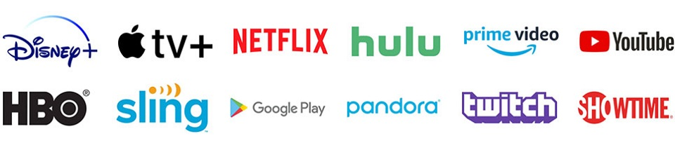

Bienvenidos
Nunca te pasó que quisiste ver una serie o película que alguien te recomendó y te desilusionaste porque no figuraba en el catálogo de tu proveedor de contenidos?
O cuándo tuviste que bucear entre decenas de resultados de búsqueda para encontrar el proveedor que pasaba la película que deseabas ver?
O deseparado por conocer el día de estreno de la nueva temporada de tu serie favorita?
series+películasYA apunta a dar respuestas a éstas y otras preguntas, reuniendo en un solo lugar la oferta de contenido de cada proveedor y ordenando el caos que produce la avalancha de estrenos que diariamente nos proponen los distribuidores de contenido.Los invitamos a bajar la ansiedad y a no desperdiciar más tiempo en búsquedas innecesarias. Ahora toda la información de series y películas está en un solo lugar y a un click de sus consultas.
Testimonios
Muy bueno!!!
Qué fácil me resultó encontrar quien pasaba Succession!!
Fernando Fernandez - La Plata, Bs. As.
Excelente!!!
Ya sé el día de estreno de la nueva temporada de Ozark!
Alvaro Alvarez - CABA